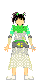

|
去年は女の子がリーダー役でまとめてくれた中学生てれび戦士ですが、
今年は2大リーダーと呼べる熊ちゃんと山ちゃんがいます。
女子チームもすっかり貫禄が出てきた感があります。
こういう中学生戦士がいるから安心して天てれを見ることが出来ますね。
以下、学年順・あいうえお順に紹介していきます。
名前…加入年度（年数）/誕生日/血液型/所属事務所 です。
中学2年生
|
熊木 翔…2000~(3) / birth:2.Mar.1989 / AB / キリンプロ
最年長の熊ちゃんは明るく元気なしっかり者のイメージがあったのですが、
たまにしっかりしてないところもあって（笑）、それが逆に熊ちゃんを好きになってしまう所だったりもします。
「かわいい」と言われる事の多い熊ちゃんですが、今年の初めからショーバスケットに挑戦するなど、
男気もたっぷり見せてくれます。
今回の天てれイベントでは、自分が話題の中心ではないところでも、後ろの方でしっかり演技をしていて、目を引きました。
福ちゃんへのツッコミもなかなか鋭く（笑）お笑いをやらせたら上手そうですよね。（昔の企画でやってたりするかもしれないですね。）
中学1年生
 |
岩井 七世…2001~(2) / birth:23.Apr.1989 / A / イトーカンパニー
ジュニアアイドルとして絶大な人気を博している七世嬢ですが、
やはり人気の訳は
そのきれいな顔だけではないんですよね。
七世の笑顔は本当に元気を分けてもらえるし、楽しい話も七世らしさが溢れていて聞いてて楽しいです。
不思議な話も七世にはちゃんと意味があって、「あるよ。意味くらい」と言ったのがすごく印象に残ってます。
天てれハウスで、文句を言いながらも小百合の分の草履作ってあげてたり、
そういう七世もすごく好きです。そういう所もっと映して欲しいです。
七世がいつも笑顔というのは“プロ“意識なのかもしれません。
もしくは、それが自然にやっていることであれば、更にすごい事です。
モデルとしても小中学生女子からの多くの憧れを受けていても、今日も七世はマイペース、って感じがいいですよね。
|
俵 有希子…2000~(3) / birth:4.Feb.1990 / A / キリンプロ
ゆっこ姉さんはいつも一生懸命で心を打たれます。
焦ってる時やちょっと強気な時なんて可愛さ全開って感じですよね。
一生懸命さから来る、突発的な面白い言葉もなんだか普通じゃありません。
「普通じゃない」というのもほめ言葉で、ゆっこさんは他の誰でもなく、「俵有希子」という、
ものすごい個性の持ち主だと思います。
綺麗な美少女なゆっこさんよりも、妹のブルーベリーをぶん捕るゆっこさんの方が私は好きです。
（その場面を見ながら「これお姉ちゃんと一緒」と妹に言われてしまいました。）
私も二人姉妹の長女ですが、こういう形の姉妹はたいがい妹の方がしっかりしてるようですねぇ（＾＾；）
冷蔵庫もちゃんと動かしたのやら…。頑張れ小百合。
|
村上 東奈…2001~(2) / birth:4.Apr.1989 / B / ヒロセプロジェクト
私の中で「憧れる女性像」第一位は東奈です。
本当に人間として格好いい人だなぁと思います。
歌にダンスにスポーツに、最近は映画主演も果たし、演技にもその才能を惜しげも無く発揮していますが、
才能だけじゃない芯の強さや優しさがその中に隠されているのだと思います。
何かに集中している時の真っ直ぐな目には、東奈にしか見えないものが見えているのではないでしょうか。
将来私が子供を産んで、もしその子が東奈のような子になってくれれば、親として何も言う事はなさそうです(^-^)
そして、ついにMTKでソロをやる事ができましたね！可愛らしい雰囲気の東奈もすごく好きです。
おめでとう！何だか見てる私もすごく嬉しかったです。
|
山元 竜一…1998~(5) / birth:22.Jul.1989 / AB / 宝映プロダクション
言わずと知れた「天てれ一、熱い男」の山ちゃんですが、やっぱりその人気たるは
ものすごいものがありますね。
特に女性票を多く集めているようです。
かくいう私も天てれファン当初は山ちゃんファンでした。
（今は全員のファンです。…と言いつつも心は卓也に奪われ気味です（笑）。）
最近はちょっとクール目な山ちゃんをよく見ている気がしますが、やっぱりもっと熱くなってもいいですよね。
調子に乗った感じのすっとぼけ山ちゃんも好きですが（笑）。
ベテラン山ちゃんは年下の戦士からも慕われているようですが、人に好かれるのも解りますよね。
ジェントルマンな山ちゃん、というのが最近の印象です。
突っ走ってる、人を無視した山ちゃんもいいのになぁ。また「本日の司会」をやって欲しいです。
あぁ、何だか山ちゃんは何をやってても何でも良く思えて来てます…（笑）。
色んな顔を見せてくれますが、どれも良い！…すごいな、山ちゃん（笑）。（＾＾；）
このページで使わせて頂いているイラストは、「天てれ商会吉備巻堂」のBOXYさんの作品です。
この画像の無断複製及び転載は著作権法により、禁じられています。
管理人は了承を得てお借りしています。
|
 |